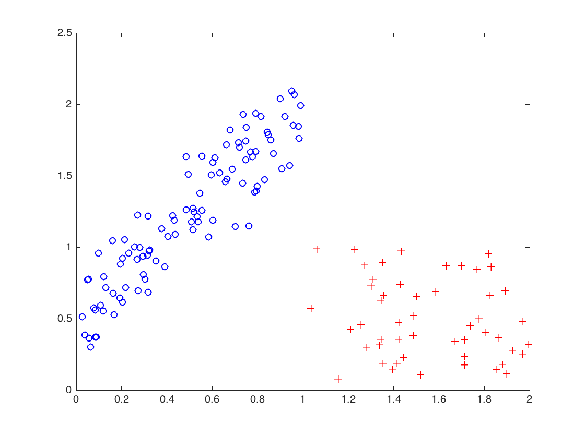
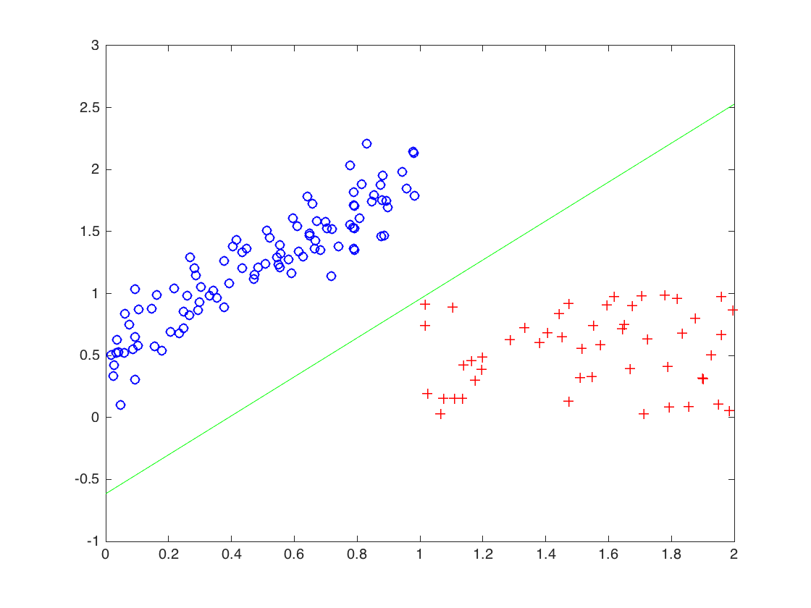
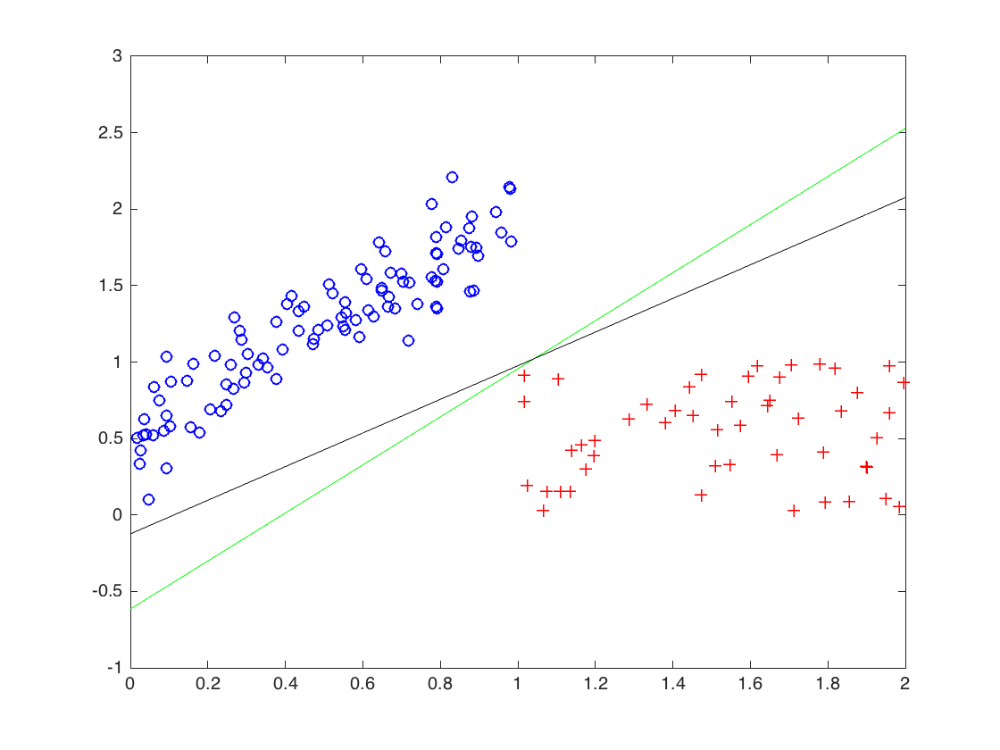
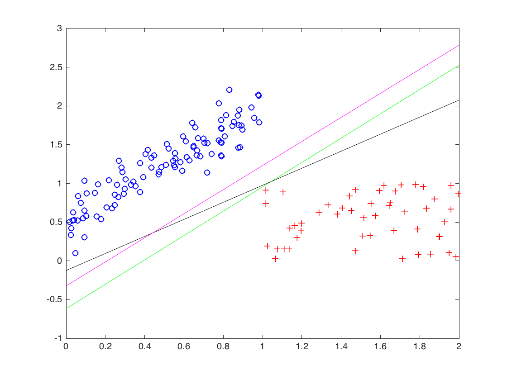
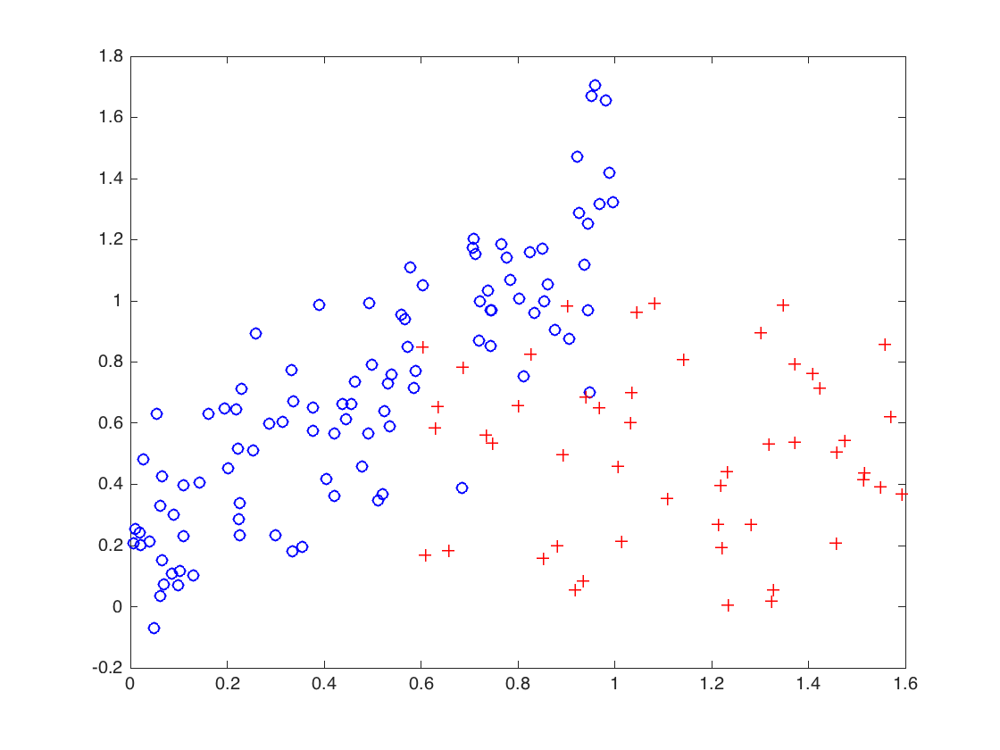
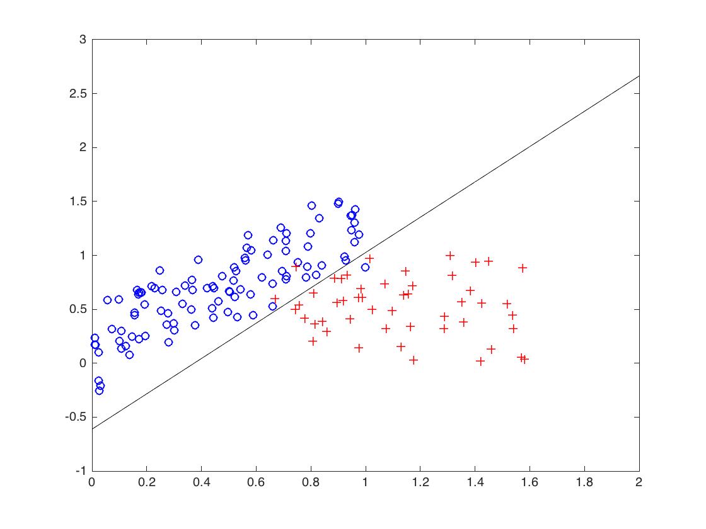
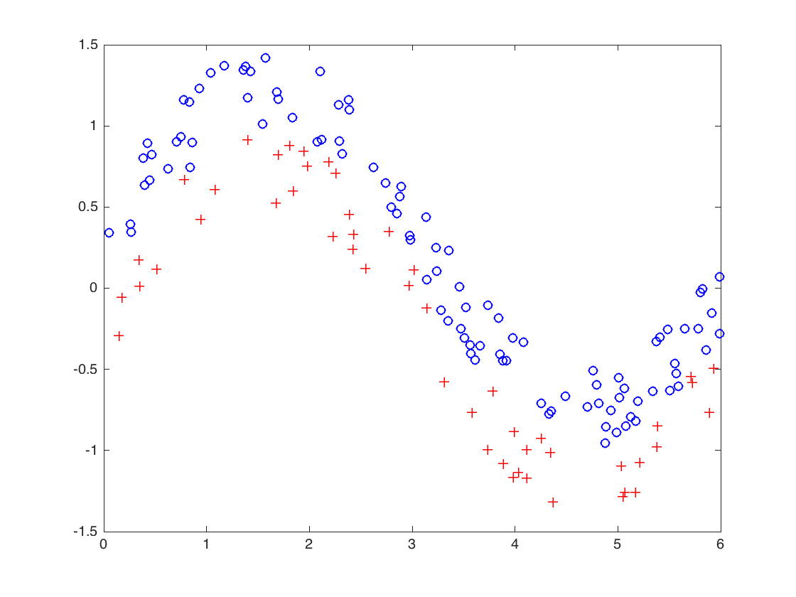
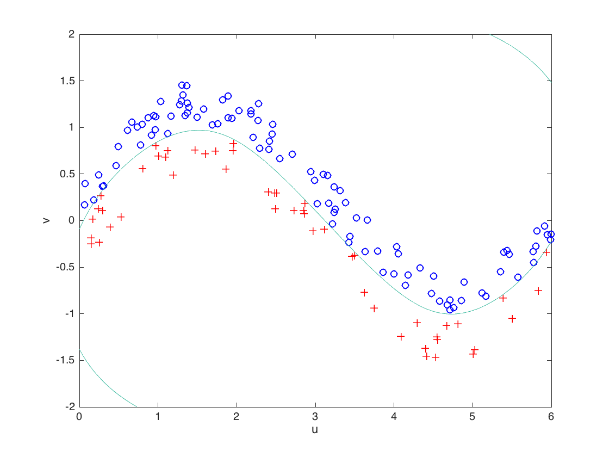
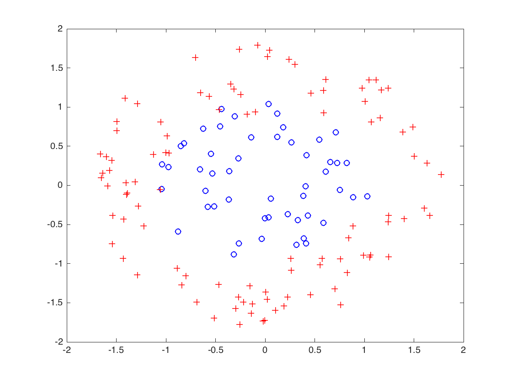
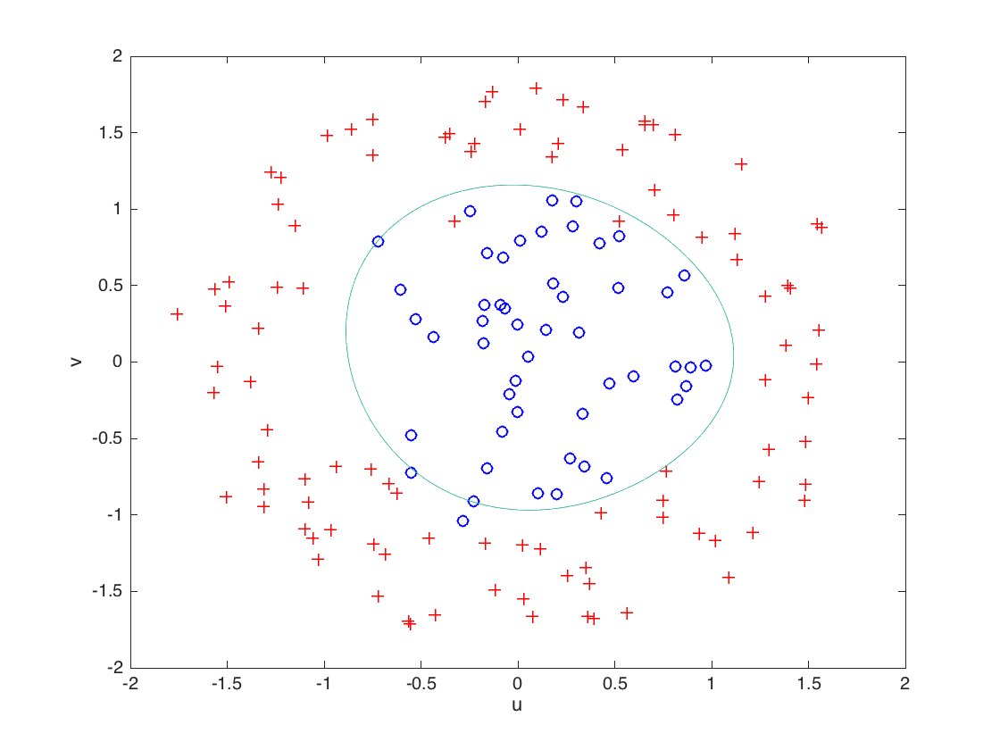

Contents
- The case of two linearly separable classes
- generate the data
- separating "hyperplane" produced by a linear feasibility problem
- separating "hyperplane" produced by the perceptron algorithm
- separating "hyperplane" produced by hard SVM
- The case of two almost linearly separable classes
- generate the data
- "hyperplane" produced by soft SVM
- First case of two classes clearly not linearly separable
- generate the data
- Soft SVM with a polynomial kernel
- Second case of two classes clearly not linearly separable
- generate the data
- Soft SVM with a polynomial kernel
%%%%%%%%%%%%%%%%%%%%%%%%%%%%%%%%%%%%%%%%%%%%%%%% % Computational Illustration for Chapter 04 % Support Vector Machines %%%%%%%%%%%%%%%%%%%%%%%%%%%%%%%%%%%%%%%%%%%%%%%% clear all; clc;
The case of two linearly separable classes
blue dots labeled negatively, red crosses labeled positively
generate the data
m0 = 100; m1 = 50; X0 = zeros(m0,2); X0(:,1) = rand(m0,1); % abscissae of the blue dots X0(:,2) = 3/2*X0(:,1) + 1/2 + 0.2*randn(m0,1); % their ordinates X1 = zeros(m1,2); X1(:,1) = 1 + rand(m1,1); % abscissae of the red crosses X1(:,2) = rand(m1,1); % their ordinates figure(1) plot(X0(:,1),X0(:,2),'bo',X1(:,1),X1(:,2),'r+') hold on
separating "hyperplane" produced by a linear feasibility problem
cvx_quiet true %cvx_solver gurobi % uncomment if gurobi is to be used cvx_begin variable w_f(2) variable b_f minimize 1 subject to X0*w_f-b_f <= -1; X1*w_f-b_f >= +1; cvx_end % visualize the "hyperplane" (in green) grid_x = 0:0.1:2; plot(grid_x,(-w_f(1)*grid_x+b_f)/w_f(2),'g');
Warning: The following errors were issued when initializing the solvers:
Gurobi: No valid Gurobi license was found.
Please check your installation and re-run CVX_SETUP.
These solvers are unavailable for this session.
 separating "hyperplane" produced by the perceptron algorithm
X = [X0 ones(m0,1); X1 ones(m1,1)]; y = [-ones(m0,1); +ones(m1,1)]; w_p = zeros(3,1); obj = y.*(X*w_p); % to be entrywise positive at the end on the loop while min(obj) <= 0; [~,i] = min(obj); w_p = w_p + (y(i)/norm(X(i,:))^2)*X(i,:)'; obj = y.*(X*w_p); end % visualize the "hyperplane" (in black) plot(grid_x,(-w_p(1)*grid_x-w_p(3))/w_p(2),'k');
separating "hyperplane" produced by hard SVM
cvx_begin variable w_h(2) variable b_h minimize norm(w_h) subject to X0*w_h-b_h <= -1; X1*w_h-b_h >= +1; cvx_end % visualize the "hyperplane" (in magenta) plot(grid_x,(-w_h(1)*grid_x+b_h)/w_h(2),'m');
The case of two almost linearly separable classes
blue dots labeled negatively, red crosses labeled positively
generate the data
clear all; clc; m0 = 100; m1 = 50; X0 = zeros(m0,2); X0(:,1) = rand(m0,1); % abscissae of the blue dots X0(:,2) = X0(:,1) + 1/4 + 0.2*randn(m0,1); % their ordinates X1 = zeros(m1,2); X1(:,1) = 0.6 + rand(m1,1); % abscissae of the red crosses X1(:,2) = rand(m1,1); % their ordinates figure(2) plot(X0(:,1),X0(:,2),'bo',X1(:,1),X1(:,2),'r+') hold on
"hyperplane" produced by soft SVM
cvx_quiet true %cvx_solver gurobi % uncomment if gurobi is to be used lambda = 1e-3; cvx_begin variable w_s(2) variable b_s variable xi_s(m0+m1) nonnegative minimize norm(w_s) + (1/lambda)*sum(xi_s) subject to X0*w_s-b_s <= -1 + xi_s(1:m0); X1*w_s-b_s >= +1 - xi_s(m0+1:end); cvx_end % visualize the "hyperplane" (in black) grid_x = 0:0.1:2; plot(grid_x,(-w_s(1)*grid_x+b_s)/w_s(2),'k');
Warning: The following errors were issued when initializing the solvers:
Gurobi: No valid Gurobi license was found.
Please check your installation and re-run CVX_SETUP.
These solvers are unavailable for this session.
 First case of two classes clearly not linearly separable
blue dots labeled negatively, red crosses labeled positively
generate the data
clear all; clc; m0 = 100; m1 = 50; X0 = zeros(m0,2); X0(:,1) = 6*rand(m0,1); % abscissae of the blue dots X0(:,2) = sin(X0(:,1)) + 0.5*rand(m0,1); % their ordinates X1 = zeros(m1,2); X1(:,1) = 6*rand(m1,1); % abscissae of the red crosses X1(:,2) = sin(X1(:,1)) - 0.5*rand(m1,1); % their ordinates figure(3) plot(X0(:,1),X0(:,2),'bo',X1(:,1),X1(:,2),'r+') hold on
Soft SVM with a polynomial kernel
X = [X0; X1]; y = [-ones(m0,1); +ones(m1,1)]; K = (1 + X*X').^3; cvx_quiet true lambda = 1e-3; cvx_begin variable a_p(m0+m1) variable b_p variable xi_p(m0+m1) nonnegative minimize ( a_p'*K*a_p + (1/lambda)*sum(xi_p) ) subject to y.*(K*a_p-b_p) >= 1-xi_p cvx_end % visualize the separating surface f = @(u,v) a_p'*(1+X*[u;v]).^3 - b_p; ezplot(f,[0,6,-2,2]) title('')
Warning: The following errors were issued when initializing the solvers:
Gurobi: No valid Gurobi license was found.
Please check your installation and re-run CVX_SETUP.
These solvers are unavailable for this session.
Warning: Function failed to evaluate on array inputs; vectorizing the function
may speed up its evaluation and avoid the need to loop over array elements.
 Second case of two classes clearly not linearly separable
blue dots labeled negatively, red crosses labeled positively
generate the data
clear all; clc; m0 = 50; m1 = 100; r0 = 1.1*sqrt(rand(m0,1)); theta0 = 2*pi*rand(m0,1); r1 = 0.8+sqrt(rand(m1,1)); theta1 = 2*pi*rand(m1,1); X = [r0.*cos(theta0), r0.*sin(theta0);... r1.*cos(theta1), r1.*sin(theta1)]; y = [-ones(m0,1); +ones(m1,1)]; figure(4) plot(X(1:m0,1),X(1:m0,2),'bo',X(m0+1:end,1),X(m0+1:end,2),'r+') hold on
Soft SVM with a polynomial kernel
sigma = 1; m = m0+m1; K = zeros(m,m); for i = 1:m for j = 1:m K(i,j) = exp(-norm(X(i,:)-X(j,:))^2/2/sigma^2); end end cvx_quiet true lambda = 2e-1; cvx_begin variable a_g(m) variable b_g variable xi_g(m) nonnegative minimize ( a_g'*K*a_g + (1/lambda)*sum(xi_g) ) subject to y.*(K*a_g-b_g) >= 1-xi_g cvx_end % visualize the separating surface f = @(u,v) a_g'*exp( -(diag(X*X') - 2*X*[u;v] + u^2+v^2)/2/sigma^2 ) - b_g; ezplot(f,[-2,2,-2,2]) title('')
Warning: The following errors were issued when initializing the solvers:
Gurobi: No valid Gurobi license was found.
Please check your installation and re-run CVX_SETUP.
These solvers are unavailable for this session.
Warning: Function failed to evaluate on array inputs; vectorizing the function
may speed up its evaluation and avoid the need to loop over array elements.
